Decarbonize! A simulation of global warming
Project Overview
Purpose
Events at scale are often difficult to visualise and a key example of this is global warming. While we’ve all heard of sea level rise and the greenhouse effect, it’s very difficult to know what this means for the planet as a whole. Therefore the aim of this project is to create an interactive simulation of the Earth undergoing global warming. The intent is to create something that can explain some of the fundamentals of global warming in an interactive and easy-to-share format so that anyone can quickly get an intuitive understanding of the topic. The process of creating this simulation will involve texturing, modelling and animation of a 3D model in order to produce a final model.
Sea level rise and the greenhouse effect
The first thing I wanted to model was the greenhouse effect. This occurs when gases in the atmosphere trap infra-red radiation that bounces off the Earth’s surface. This results in continuous warming of the planet. Currently, this effect has been greatly exacerbated by the burning of fossil fuels for energy, leading to a release of CO2 into the atmosphere, which is a very common greenhouse gas1. This has led to dangerous climate effects in recent years. This global warming is also is not linear, but rather could be exacerbated by certain “tipping points” which lead to more CO2 and other greenhouse gases being released into the atmosphere. The warming of the planet also leads to melting of the ice-caps which then causes a rise in sea-levels. This can increase the likelyhood of floods in low-lying areas and completely submerge certain coastal cities1. This is the second main feature that I would like to model on this planet.
Plan
- Rendering a 3D sphere and light source using WebGL
- Wrapping a 2D texture onto the sphere using UV coordinates
- Adding a displacement, bump, normal and specular map to add additional detail
- Creating an effect to simulate sea level rise on the planet
- Creating an atmospheric glow effect using the fragment shader
- Adding atmosphere and sea level rise animation to the globe
- Modelling and importing powerplant and turbine models
- Adding interactive controls and GUI features
Implementation
WebGL was chosen in order to make the simulation easy to view and share between people. The three.js library was used to integrate the simulation into a webpage. The shaders were programmed in GLSL and imported into the final javascript file. The wind turbine and powerplant were modeled and textured in blender and then imported into WebGL using the GLTS file format.Texturing
A Mercator projection map of Earth was downloaded from a NASA repository2 as a texture and then applied to a sphere using UV coordinates. These coordinates are equivalent to XY coordinates if the sphere was “unwrapped” into a 2D sheet. In WebGL, the geometry of a sphere is subdivided into square planes. Therefore each vertex of the sphere corresponds to a point on a virtual grid applied on top of the supplied 2D texture. The colour of the pixels between each vertex is then calculated based on the colour values between grid points on the texture. The colour of each pixel on the texture is therefore “mapped” to a corresponding plane on the sphere and scaled accordingly. This reverses the Mercator projection used to create the 2D map and results in a more accurate 3D globe representation of the Earth.
 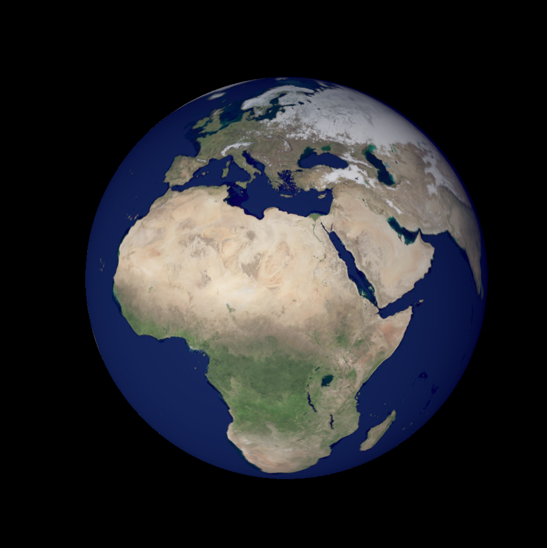
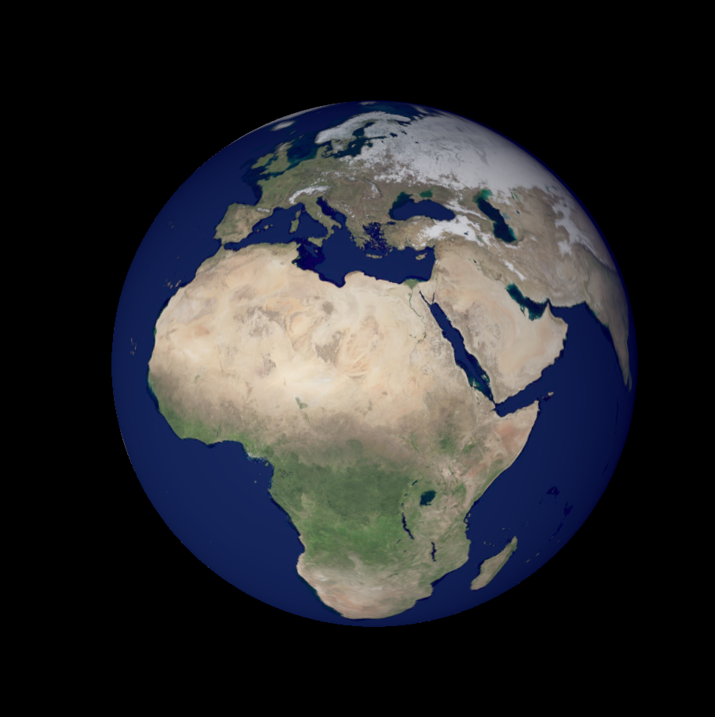
As the Earth is a 3D object, all 2D maps have undergone distortion in the projection process. Some flaws of the 2D Mercator projection can be seen when mapping back to a sphere. For example Africa is considerably large compared to other continents, however the Mercator projection enlarges areas further from the equator leading to distortion. Therefore a 3D simulation of Earth is much more accurate than a 2D simulation. However this model still looks quite flat and does not resemble the actual Earth. One of the goals is to simulate sea level rise, therefore in order to better visualise the ocean a specular map was added to create reflections3. This map makes the ocean more reflective than the land, visually indicating the difference between water and land.
 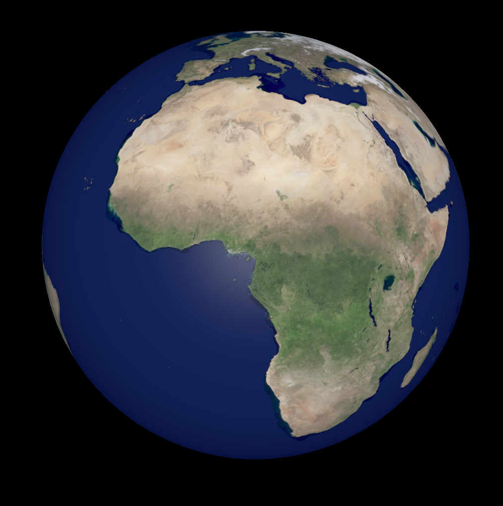
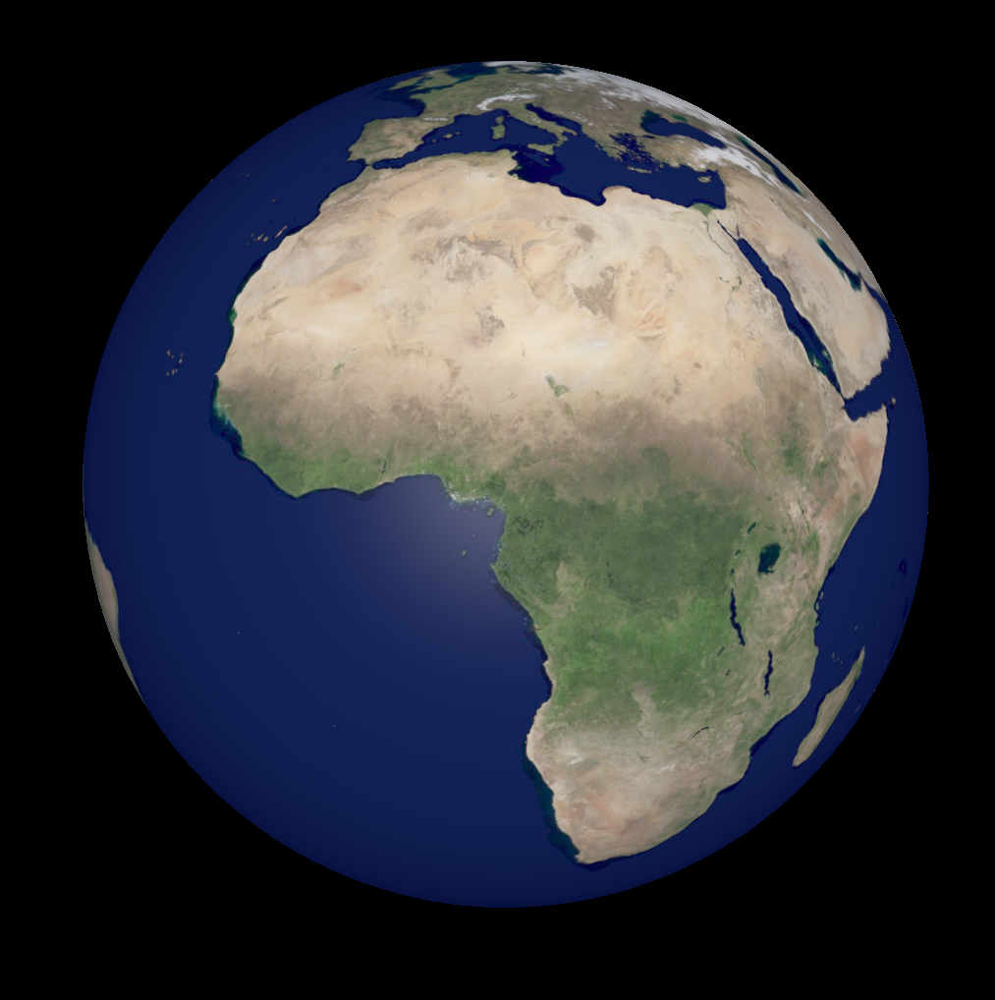
This map still lacks topographic detail. This can be added using a displacement map. This runs in the vertex shader and applies a displacement in the direction of the normal vector to each vertex in the mesh based on a given greyscale texture3. This has the effect of raising the vertex and changing the geometry of the sphere. The magnitude of the displacement is dependant on the brightness value of a given pixel on the texture. A white pixel would mean maximum displacement whereas a black pixel would mean no displacement. A texture of world topography was used to as a displacement map resulting in the following change.
 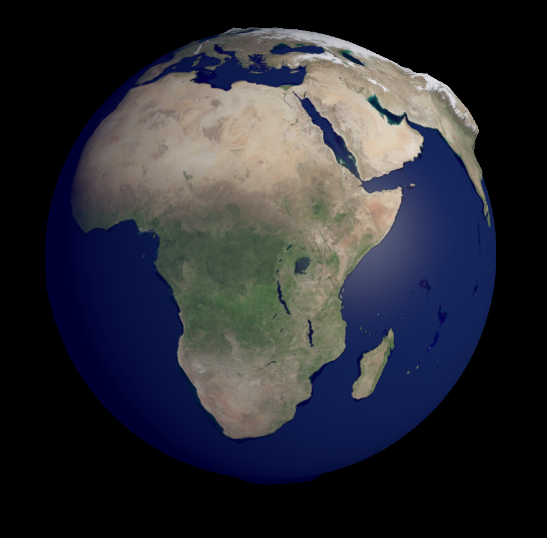
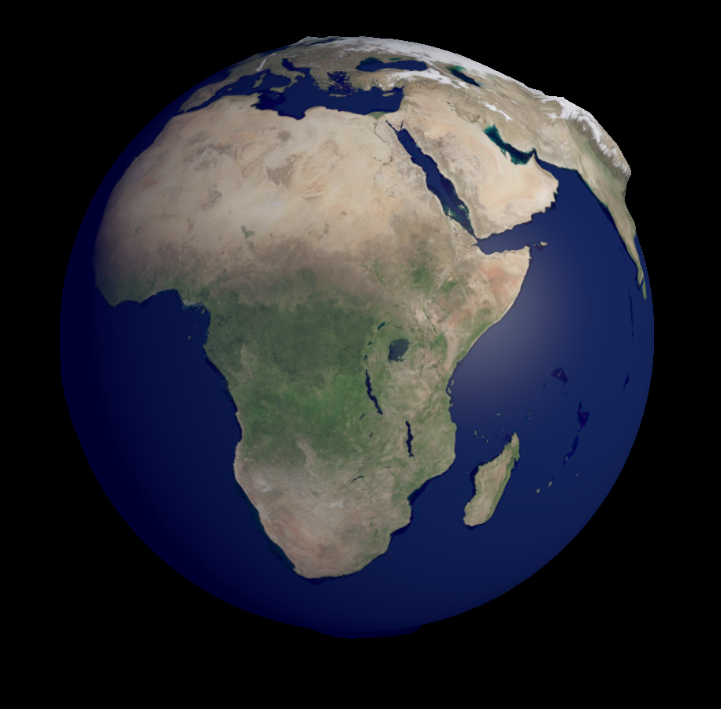
As can be seen the Himalayan mountains, the highest point on Earth, has been displaced outward from the sphere, changing the geometry. This can be used to showcase the effects of rising sea levels. By replacing everything below a certain height threshold with a blue texture we can create the illusion of the sea levels rising.
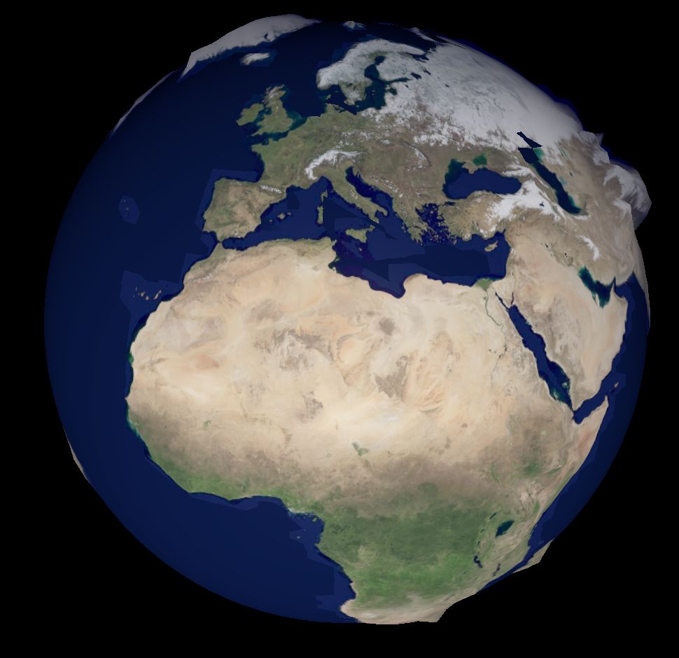 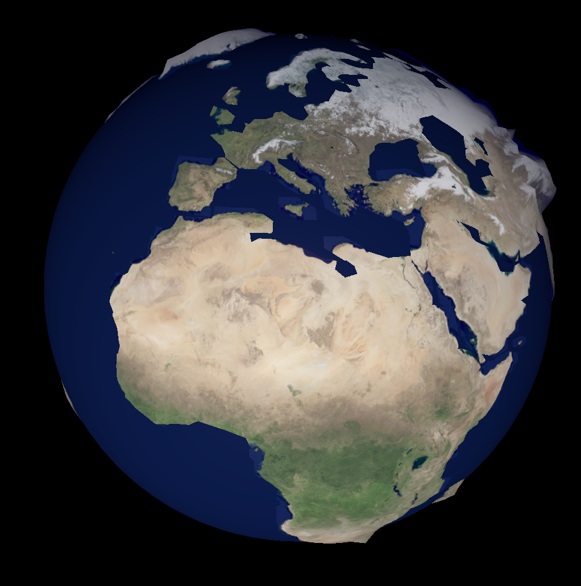As can be seen rising sea levels take out parts of the UK and the Netherlands in this simulation, which showcases how the displacement map changes the physical location of vertices. However there is a limit to the amount of detail that can be applied using a displacement map. This limit is due to the computational limitations of WebGL preventing high polygon counts, restricting the number of vertices available to displace. Therefore even with the added topography detail, the earth still appears flat. This is because there is no fine-scale detail. However this detail can be simulated using some clever techniques. One such technique is a bumpmap. Similar to a displacement map, this is based on a 2D greyscale texture. However instead of changing the position of vertices in space, it manipulates lighting and shadows to create the illusion of depth at a per-pixel level instead of a per=vertex level. Unlike displacement maps, bumpmaps require a light source to function. If a pixel on the texture is black then light hitting the material behaves as if that pixel is recessed into the geometry. If a pixel on the texture is white, then light reflecting off the material behaves as if those pixels are elevated compared to the rest of the geometry. No resolution is actually added, therefore is often called “fake” detail. This is the simplest way to add detail to a mesh as the bumpmap only records height information.
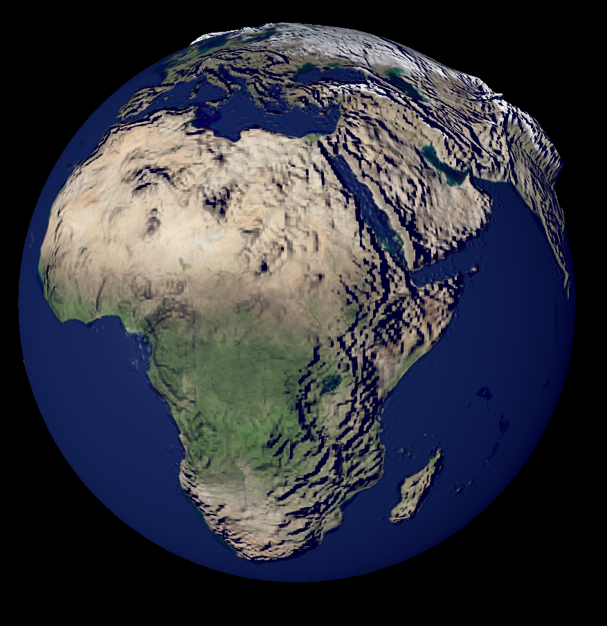
The light in this scene is coming from the left. As can be seen the bumpmap makes pixels “facing” the light source brighter, meanwhile pixels on the other side of elevated areas are made darker. This provides the illusion of detailed geometry using simple lighting and darkening. However bumpmaps only store elevation detail, and do not store information about the angle of surfaces leading to a jagged pixellated appearance. For this a normal map can be used4. A normal map is very similar to a bumpmap in that it creates “fake” detail. However it uses an RGB texture instead of a greyscale one to store extra detail about the slope of various surfaces. The red and blue channels store lighting information when lit from the x and y axes respectively, while the green channel stores lighting information when lit from above. The X and Y channels are typically the most important, which is why normal maps usually appear a light shade of purple. The precise values are evaluated from a bumpmap using this set of differential equations, one for each axis.
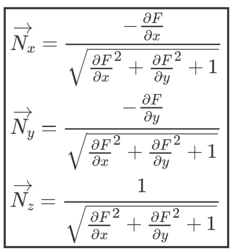As a result, a normal map can store information about the slope as well as the elevation of a surface. This allows for a smoother transition between pixels while increasing the level of perceived detail on the surface.
 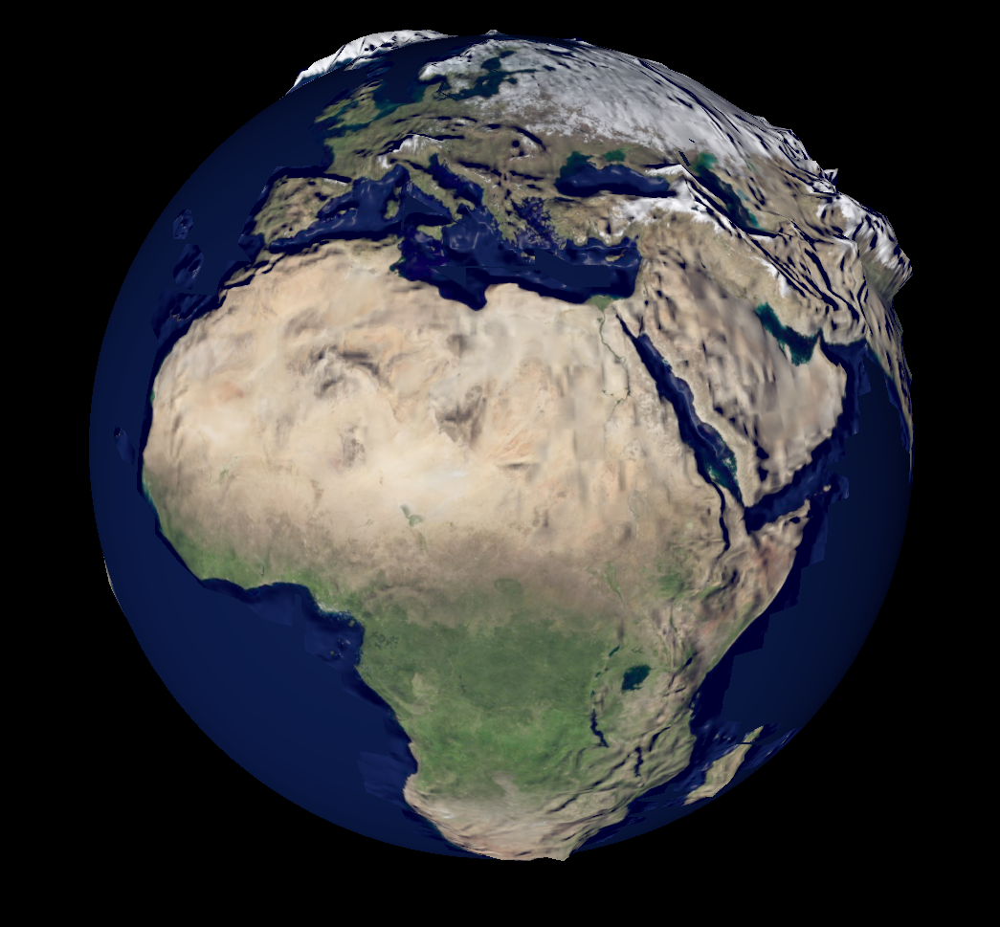
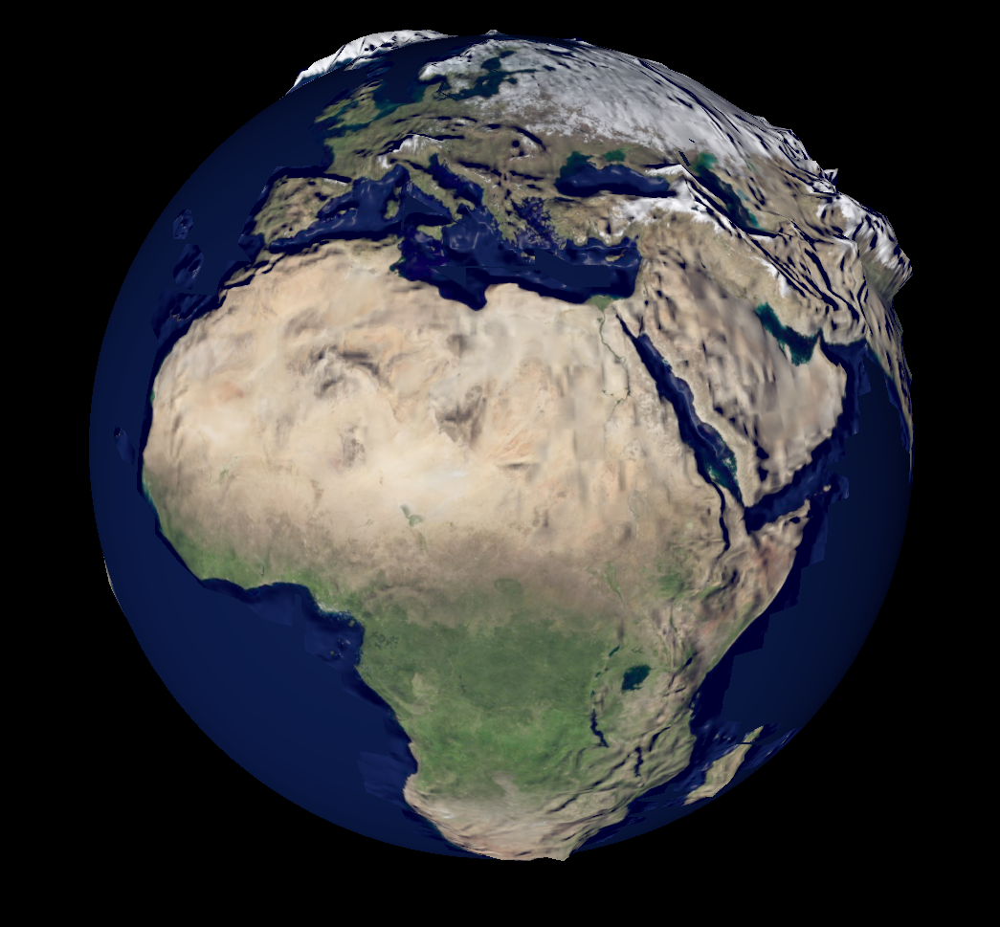
This makes the final render look a lot smoother and more realistic compared to using a flat texture or a bumpmap. However this planet still lacks some key features such as an atmosphere. Unfortunately, adding clouds would obscure the surface of the earth which is the main goal of this project. However we can still simulate other atmospheric effects. In particular we can simulate “airglow” which is the light blue shine produced by the atmosphere, due to diffused sunlight and chemical effects. This can once again be done using shaders. In order to do this, a second sphere was created, larger than the planet. Then the normal of each vertex was passed to the fragment shader with a normalised magnitude of one. Following this the colour of each pixel was then assigned a blue colour with a power law drop off in intensity as the normals faced further away from the camera.

This shader was then applied on top of the globe, using additive blending. Any part that intersected with the globe was removed, in order to only render the outside layer. Finally, some background stars were added to give the planet a place in space. This resulted in the final version of the globe.
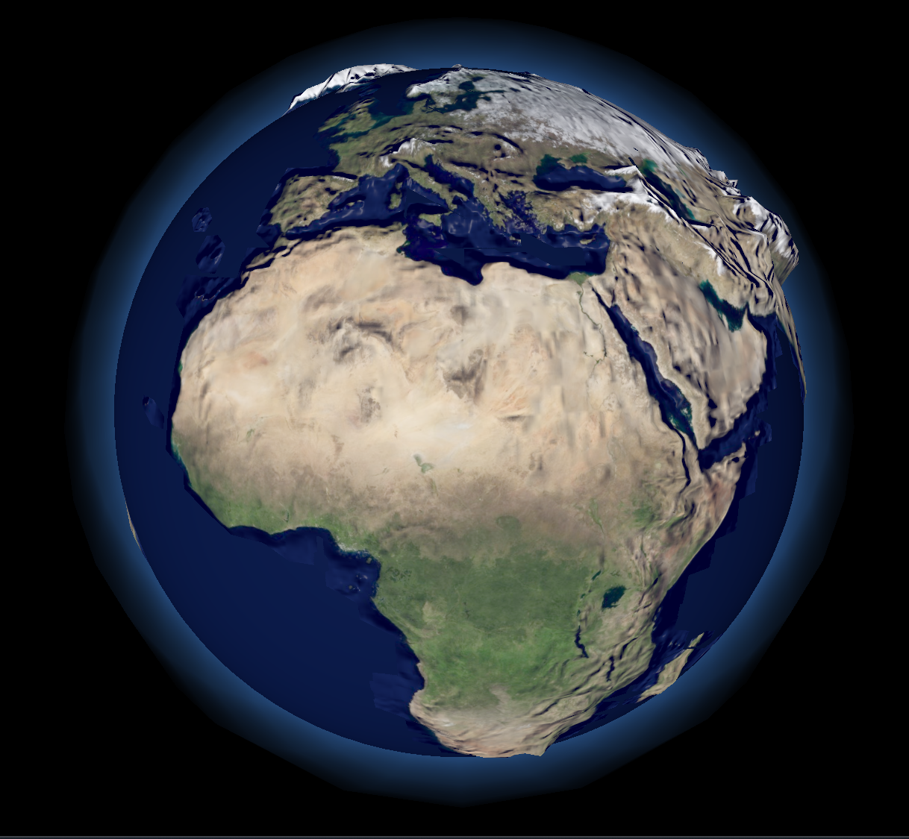Modelling
Using blender, a coal fired power plant and a wind turbine were both constructed in blender using mesh primitives and proportional editing of vertices. This involves displacing verticies different amounts from a transformation applied to a specific area. It allows for generation of smooth curves as can be seen in the blades and motor housing of the wind turbine.
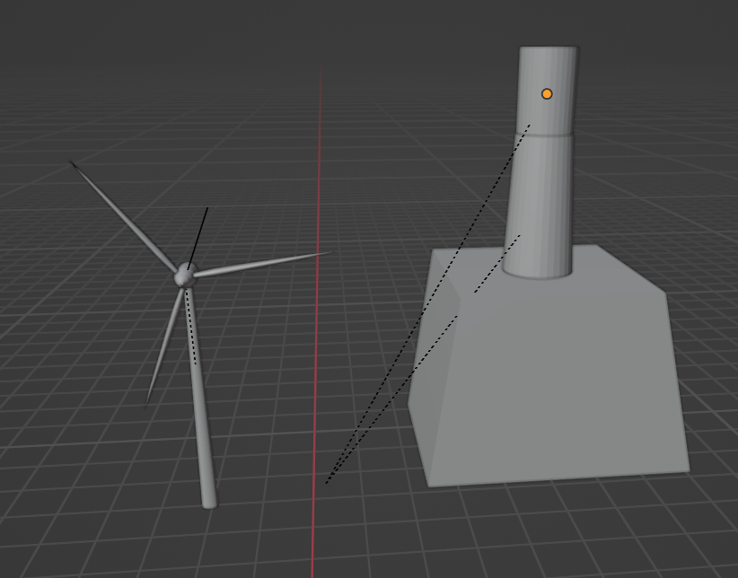These materials were then applied to both models. A plain white material was applied to the turbine while the coal fire power plant was given a dark grey material for the base. A striped material was generated for the smokestack by taking the absolute value of a sin-wave texture, applying it to the object coordinates and then mapping the colours to be the colours red and white. A 3D Perlin noise texture was applied to the colour of the coal fired powerplant in order to add more realistic detail. An array modifier was applied to generate the blades of the wind turbine placed 120 degrees apart around a central axis (attached to the motor housing).
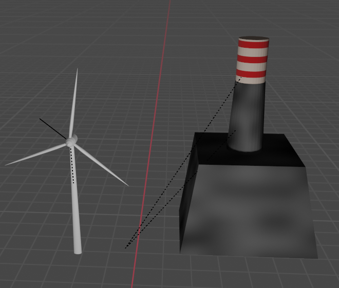Finally these models were plotted on the globe using the coordinates of major cities. They were moved to a location on the globe based on the radius of the sphere using spherical coordinates. The 3D models were then rotated so that their rotation matches the normal of the sphere (i.e. pointing outwards from the centre). The model for the wind turbine was imported in two parts. The blades were parented onto the base so that the child (i.e. the blades) inherited the transform of the base, ensuring they were moved as one piece. This led to the final globe with models added.
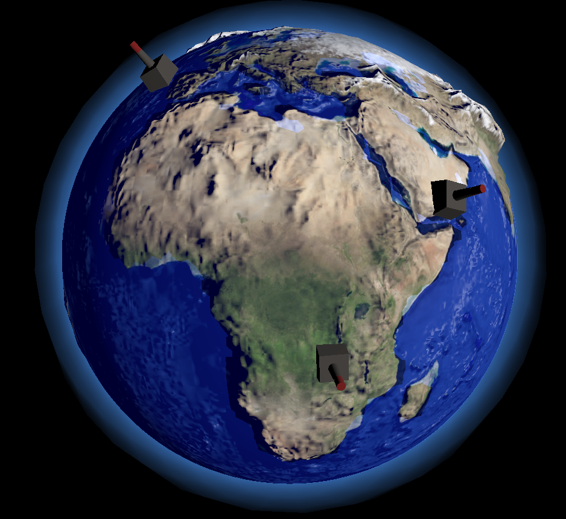Animation
All of these elements can now be brought together in the animation stage. First, orbital controls were added so that the planet could be viewed from all angles. When time is enabled, the light source is rotated around the planet to simulate the sun. This is preferable to rotating the planet itself as the rotation matrix would have to apply to all the geometry including the 3D models on top of the globe. Rotating the light source only requires lighting computations to be performed each frame.
Rotation was also added for the blades of wind turbines around the model’s local Y-axis. By slightly increasing this Y- rotation each frame, the wind turbines spin. Using local object coordinates also allows for the models to be oriented in different directions.
Sea level rise was simulated by increasing the threshold for a pixel to be blue over time. This makes it appear as though sea levels are rising slowly. Furthermore, transparency was added to the sea material so that land that was submerged could still be visible, making the effects of sea-level rise more obvious.
Finally temperature change was simulated by changing the atmosphere colour from blue to red over time. This process is mediated by the number of coal fired power plants on the globe. If the number of coal fired plants are reduced, then the planet begins to cool back down to normal. All of these properties were then put into a graphical user interface (GUI) so that they could be accessed by the end user. This led to the final product.